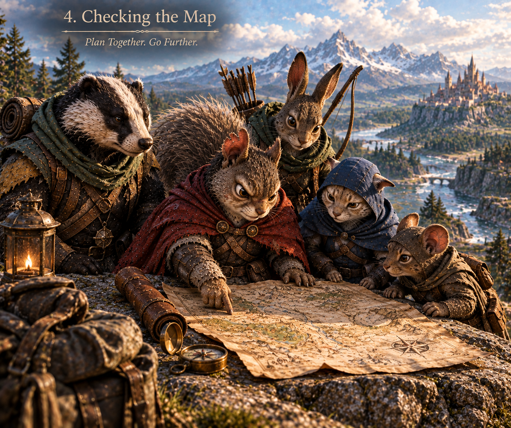

This is not a traditional MUD made from thousands of numbered rooms. It is a persistent coordinate world that becomes detailed where people actually live, explore, build, fight, and leave their mark.
World Design at a Glance
1. One Continuous Coordinate World
The outdoor world is based on coordinates rather than numbered rooms. A character may stand at a precise world position, and physical things occupy positions and dimensions around that character.
Coordinate Standard
World positions use signed 64-bit integer coordinates, with one coordinate unit equal to one inch. This provides exact inch-level position granularity while leaving a coordinate range vastly larger than the playable world could ever require. PostgreSQL can store these values directly as BIGINT; Python integers comfortably represent them as well.
At one-inch granularity, the positive half of a signed 64-bit coordinate alone extends roughly 145 trillion miles from the origin. The practical size of Crown & Call's world can therefore be chosen entirely for gameplay reasons rather than datatype limitations.
The World Origin
(0,0) is the mathematical center of the coordinate system. Coordinates are signed naturally around that origin rather than artificially offsetting the entire world into enormous positive numbers.
The convention is simple: east is positive X, west is negative X, north is positive Y and south is negative Y. Elevation uses Z, with positive and negative values around an appropriate reference such as sea level.
The origin is an engine reference point and need not have special importance in the fiction, although locating the initial development area reasonably near it makes coordinates easier for developers to read and debug.
Distance and Heading
Negative coordinates do not complicate spatial mathematics. Distance, direction, perception and movement normally depend on the difference between two positions. Even an artificially all-positive coordinate system immediately produces negative displacement values whenever a target lies west or south of the observer.
Headings can be derived from the displacement with ordinary Cartesian mathematics such as atan2. Integer coordinates guarantee exact one-inch positions; calculated distances and headings may naturally be fractional values. For example, points one inch apart on both X and Y are approximately 1.414 inches apart diagonally.
Signed coordinates also make world geography easier for developers to understand at a glance. A negative X and positive Y immediately identifies the northwest quadrant; positive X and negative Y identifies the southeast quadrant.
Player-Facing Movement
Coordinates are an engine concept, not a burden placed on the player. Players navigate naturally: north, follow road, approach rider, go tavern, go light. The engine translates intention into movement through coordinate space. Players ordinarily never need to see raw coordinate values.
2. Procedurally Generated Wilderness
The untouched wilderness does not need to be instantiated tree by tree, rock by rock or blade of grass by blade of grass. Procedural generation describes the character and resources of the landscape: biome, elevation, moisture, terrain, vegetation density, dominant species and similar environmental properties.
Given the same seed and coordinates, the generator produces the same underlying landscape whenever that area is needed. An oak-forested area does not require thousands of generated Oak objects. It simply provides oak as part of the local landscape.
Interaction Creates Specific History
If a character cuts down an oak in suitable oak woodland, the engine does not need to identify a pre-existing procedural tree at an exact coordinate. The landscape supplies the tree. The player's action creates the specific things that now matter: logs, a stump, work performed and any meaningful change to the surrounding land.
Small actions need not rewrite the terrain itself. One stump in oak woodland does not mean the forest is now materially different. If repeated activity becomes significant—such as clearing a large area—the world can store a broader landscape modifier describing reduced tree cover, a clearing, field, burn scar or similar change.
3. Persistence by Exception
The generated landscape is the baseline. The database stores history and meaningful differences from that baseline.
This is the heart of world persistence. An untouched acre may need almost no stored detail. An acre where people have lived for twenty years may contain a rich history of construction, clearing, trails, ruins and possessions. As temporary traces disappear and nature reclaims an area, obsolete exceptions can eventually be removed.
4. Player Construction & Homesteading
A player can travel deep into wilderness, clear land and create a place that never existed in the original world design. Cabins, wells, fences, fields, barns, roads, trails and other alterations become persistent world objects.
The homestead does not need to become a special numbered “Jake's Homestead Room.” It remains part of the same coordinate world. Another player can genuinely discover it by physically reaching that location.
Construction Is Physical
Construction materials must actually be brought to the worksite. A Craft cannot silently consume lumber, stone or tools merely because they are owned by the character or happen to exist hundreds of feet away in the same open Space. Materials carried by the character or staged within the defined work area are eligible; distant materials are not.
This makes hauling, wagons, roads, storage, workshops and the location of natural resources meaningful without inventing separate logistics mechanics. A stack of lumber beside an unfinished cabin is a real collection of world objects that another character can perceive and, subject to ownership rules, interact with.
5. Chunks & Spatial Indexing
The world is divided internally into invisible chunks. Chunks are an engine optimization used for spatial lookup, generation, persistence and simulation; players never see them.
Spatial indexes prevent perception from becoming “search every object in the world.” Nearby queries examine only nearby cells/chunks. Long-distance queries examine only entities capable of mattering at long distance.
Chunk size and indexing strategy are implementation details to tune experimentally; they should never become gameplay concepts.
6. Sleeping & Waking Areas
Most of the world is dormant. A cabin, fence, stump and abandoned field can all continue to exist without consuming active CPU time.
Waking is driven by interaction range, not by mere visibility. Seeing a mountain thirty miles away should not wake the mountain's local simulation.
7. Time, Decay & Wilderness Reclamation
Time does not require continuous simulation. If nobody visits Jake's abandoned homestead for five years, the server does not need to simulate weeds growing hour by hour.
When the area wakes, long-term systems calculate the accumulated effects of elapsed time. Reclamation can depend on biome, climate, materials, construction quality and previous state.
| Elapsed Time | Possible Changes |
|---|---|
| Months | Fields weed over, trails soften, wood weathers. |
| Several years | Brush overtakes fields, fence sections collapse, stumps rot, saplings appear, roofs deteriorate. |
| Decades | Young forest reclaims fields, roads nearly disappear, cabins become ruins, wells collapse, old fruit trees may remain as evidence. |
The Stump as a Model of History
A freshly cut oak becomes a persistent stump. Years later, when the area wakes, it may become weathered and moss-covered. Decades later it may rot away entirely while nearby trees reclaim the opening. No daily “stump update” is required; its current state is derived when someone next has reason to care.
Randomness may influence these transformations, but results should be stable and deterministic enough that repeatedly loading an area does not make its history change arbitrarily.
8. Spaces, Buildings & Boundaries
Coordinates answer where something is. A Space describes the environmental and perception context that contains it. Spaces can range from a jail cell to a hundred-square-mile plain.
A 50 × 100 foot tavern has real boundaries within town coordinates. While a character is inside, walls constrain perception to the interior. Stepping through its front door may move the character only a few feet but changes the active perception space from Tavern to Street.
Buildings Are Geometry
A constructed building literally occupies its dimensions in the game world. A 15 × 15 foot cabin encloses those 225 square feet at the coordinates where it was built. Entering the cabin does not teleport the character to an unrelated numbered room; the character crosses the doorway into the bounded interior while remaining at the corresponding world coordinates.
Walls constrain movement because walls physically occupy the boundary, not because a room lacks a north exit. Interior objects have positions of their own. A chest can sit against the west wall, a bed in the northeast corner and a lantern near the center. Larger structures can contain nested Spaces such as offices, kitchens, stalls or storerooms.
Player construction therefore changes navigable geography. Buildings can block movement and sight, shelter occupants from weather, muffle sound and contain portals such as doors and windows. The exact sophistication of collision and line-of-sight calculations can grow over time without changing this underlying model.
Portals
Doors, windows, gates, cave mouths and stairways connect spaces. Their state can control movement, vision, sound and light. A closed tavern door might block movement and vision while muffling sound; opening it allows those effects to cross the boundary.
9. Generated Perception Instead of Static Room Descriptions
look does not merely print a stored room paragraph. It asks what the character can perceive from the current position and Space, then generates prose from the answer.
An outdoor result might mention the muddy road underfoot, a sign nearby, a town wall behind, smoke miles away and a mountain on the horizon. Each observation corresponds to something that actually exists.
Perception Bands
| Band | Illustrative Scale | Examples |
|---|---|---|
| Immediate | 0–15 ft | Mug, sword, coin, nearby person |
| Near | 15–100 ft | Person, horse, lantern, doorway |
| Local | 100–1,000 ft | Building, wagon, large tree |
| Distant | 1,000 ft–2 mi | Town, tower, smoke, large fire |
| Landmark | 2–50+ mi | Mountain, hilltop castle, enormous smoke plume |
These are conceptual bands, not fixed final ranges. Crucially, a ten-mile query does not inspect every coin, sword, stump and squirrel within ten miles. It searches only indexes containing entities capable of being perceived at that scale.
One Object, Several Perceptions
At close range a player may see “a brass lantern beside the road.” Far away at night the same entity may produce only “a faint yellow light flickers to the northeast.” In daylight, nothing may be noticeable from that distance.
Distance Changes Detail
The same person might be “a figure on the road” at long distance, “a man carrying a shield” closer in, and finally “Jake carrying a battered shield” at recognition distance. Perception is not merely visible/not-visible; it controls how much information is available.
Existence Does Not Guarantee Perception
A persistent object may physically exist for years without being obvious to a passing character. Objects and traces have perceptibility appropriate to their size, age and condition. A freshly cut stump may be noticeable at useful distance; months later grass and brush may hide it except at close range even though the stump itself may take years to rot away.
Weather and environment modify perception without necessarily modifying the persistent object. Snow can conceal a low stump; tall summer grass can obscure tracks or debris; darkness, fog and brush can reduce what is noticed. When those conditions change, the underlying object need not be recreated because it never ceased to exist.
Movement, Attention & Search
Perception depends on what the observer is doing. A character galloping across country has far less opportunity to notice subtle traces than one walking, standing still or deliberately searching. Perception therefore should not be implemented as a simple rule that reveals every object inside a fixed radius.
| Observer State | General Awareness |
|---|---|
| Galloping / very fast travel | Very poor for subtle nearby details |
| Jogging / hurried movement | Reduced |
| Walking | Normal passive perception |
| Standing still | Improved opportunity to notice details |
| Active search / tracking | High attention to subtle evidence |
The same hidden stump forty feet away might go unnoticed while walking past it, become noticeable after stopping, and be very likely to be found during a deliberate search. Exact distances and modifiers are balance values rather than fixed rules at this stage.
This creates a meaningful tradeoff between travel speed and awareness. A traveler may cover ground quickly and miss subtle evidence, or travel cautiously and notice more. Deliberate searching and tracking can reveal historical traces that ordinary passive perception would omit.
Speed and Perception Are Inversely Related
Travel speed and detailed perception should be treated as opposing demands on the character's attention. The faster a character moves, the less opportunity there is to notice subtle evidence. Slowing down allows more attention to the immediate environment. At the extreme, tracking or deliberately casting around for sign is not ordinary travel with a bonus; it is a very slow form of physical searching.
Exact speeds and perception values remain subject to playtesting, but the relationship itself is foundational. A character galloping across country may perceive only obvious terrain and major features. A walking character receives normal passive perception. A character deliberately searching or tracking may move extremely slowly while closely examining only a narrow area around the path.
Tracking Is Physical Searching
When tracking, the character casts around for sign: disturbed grass, prints, broken vegetation, wagon ruts, displaced stones, cut wood and other physical evidence. The effective detailed-search area may be only approximately 10–15 feet around the character. This is an initial design range rather than a locked balance value.
Tracking therefore does not function as radar. If the relevant tracks lie forty feet from the character's search path, they may simply be missed. When a trail disappears, finding it again may require physically casting outward from the last known sign and spending real world-travel time covering the surrounding ground.
This also creates a meaningful travel decision. Moving quickly covers more territory but sacrifices information. Moving cautiously or tracking covers far less territory but greatly improves the opportunity to discover subtle traces. The two effects are intentionally inverse rather than independent bonuses.
10. Natural Movement & Spatial Communication
Generated perceptions retain references to the entities that produced them. If the player sees “a faint light to the east,” the command go light can resolve that phrase to the actual light source. The same idea supports go mountain, approach tavern, follow rider and go smoke.
Speech also uses position instead of “send to everyone in the room.” A whisper may carry only a few feet, normal speech farther, and a shout much farther. Walls and closed doors can reduce or block sound.
This permits two people at opposite ends of a large hall to experience communication differently from two people sitting together at the same table.
11. Genuine Discovery & Emergent History
A remote homestead can genuinely remain undiscovered. The game need not advertise “Jake's Cabin — 150 miles northeast.” Another player may instead discover an old wagon track, follow it through the woods, notice chimney smoke, and eventually find the clearing.
Years after abandonment, that same player might find only a sagging cabin, collapsed fence, overgrown field and old fruit trees. Nobody needed to author an “Ancient Abandoned Farm” quest. It became old because someone built it, lived there, left it, and time passed.
This is the intended character of the world: players do not merely consume locations created by designers. They can create locations that become part of the world's archaeology for later players.
12. CAPs, Crafts & Learning
Crown & Call should avoid a traditional skill system. CAPs describe what a character is capable of; Crafts describe practical knowledge the character has actually learned. Characters develop by choosing new Crafts whose prerequisites and CAP requirements they satisfy.
Knowledge Progression
Advanced Crafts are reached through prerequisite Crafts rather than being immediately available. Knowing how to fell a tree does not imply knowing how to mill lumber, and knowing how to mill lumber does not imply knowing how to frame a cabin. A character deliberately chooses what to learn next; new Crafts are not unlocked randomly.
Prerequisites should form a knowledge graph rather than a single rigid tree. One Craft may support several later disciplines, and an advanced Craft may require knowledge drawn from several branches.
CAPs Gate Knowledge; They Do Not Create Failure Rolls
A Craft may require one CAP or a combination of CAPs before it can be learned. Higher or different CAP requirements can distinguish simple practical knowledge from advanced work without creating separate numerical skills. Difficulty is expressed through prerequisites, CAP requirements, tools, materials and work time—not an arbitrary percentage chance to fail.
General Crafts, Specific World States
Crafts should remain as broad and reusable as practical knowledge permits. Construction need not have a separate Craft for every tiny stage or building variation. A general Build Foundation Craft, for example, can produce foundation objects that later building-specific Crafts consume or transform.
Scale can come from quantities and world state rather than multiplying nearly identical Crafts. A cabin might require one suitable foundation while a commercial building might require four. Exact quantities, dimensions and construction stages remain design values to be worked out.
The world object carries the specific state. A foundation knows its dimensions and location; a framed cabin knows that it is a cabin under construction. Crafts define meaningful transformations of those objects.
Proximity Resolves Craft Targets
Crafting should respect the coordinate world. When several valid targets exist, the nearest valid target within the Craft's interaction range is normally used. A held or carried valid object takes precedence over nearby ground objects. The player therefore resolves most ambiguity by physically positioning the character rather than by attaching object numbers to every Craft command.
The same rule applies to construction. A character approaches the intended cabin, worksite, forge, tree or other target and then performs the Craft. Ordinal targeting can remain useful for commands such as approach 2.cabin, but commands such as build cabin or butcher deer should not normally require numbered-object syntax.
Required materials follow the same physical principle. Carried materials and materials within the Craft's defined work area may be consumed; materials hundreds of feet away do not count merely because they are visible or owned by the character.
Deterministic Crafting
Once a Craft is learned, performing it is deterministic when its requirements are met. Better CAPs or better tools may eventually influence sensible factors such as work time or efficiency, but they should not turn a known Craft into a gambling mechanic.
If work is interrupted by combat, movement or another world event, that is an interruption rather than a random Craft failure. The design should avoid destroying carefully gathered materials merely because an RNG check failed.
Work Timer
Performing Crafts consumes abstract work capacity through a single character Work Timer. The Craft's result occurs immediately when the command succeeds; its Work Time is then added to the character's accumulated work debt. The timer continuously winds down in real-world elapsed time whether the character is online or offline.
A character may begin a Craft only while the current Work Timer is below 48 hours. The 48-hour value is a starting threshold, not a maximum. A Craft begun at 47 hours may add another 48 hours and leave approximately 95 hours of work debt. The character remains free to play normally but cannot begin another Craft until the timer falls below the threshold again.
Small Crafts use the same mechanism. Gathering or preparing something might add only minutes, while a major construction operation may add many hours. There is no need for separate major/minor Craft timer systems.
An implementation can store the debt as a future timestamp rather than decrementing a counter. When work is performed, its duration is added to the later of the current time or the existing work-until timestamp. This naturally handles offline recovery without periodic timer ticks.
Learning Timers
Each Craft has a Learning Time. There is no separate learning cooldown. A character may learn only one Craft at a time, and the Learning Time itself controls the rate of knowledge advancement.
All Learning Times use real-world elapsed time. They continue while the player is offline. Learning must never require remaining logged in, accumulating in-game hours, performing repetitive practice actions, or pausing ordinary play.
Basic Crafts may take hours or a day or two to learn. Advanced Crafts may require weeks. Exact durations are balance values to be determined through playtesting; long timers should represent genuinely substantial bodies of knowledge rather than making trivial techniques tedious.
Learning Is a Commitment
Once a character begins learning a Craft, that choice is committed until the Learning Time completes. Learning cannot be paused, swapped, banked or partially preserved. This deliberately avoids tracking fractional learning progress and prevents a secondary system of resumable learning queues.
Because the commitment may last days or weeks, the interface must clearly show prerequisites, CAP requirements, Learning Time and the exact completion date before the player confirms the choice.
The Learning Timer and Work Timer are independent. A character may continue learning one new Craft in the background while performing Crafts already known, subject to the Work Timer.
Avoid Craft Explosion
A Craft should represent a meaningful body of practical knowledge, not every tiny variation of an action. The system should not recreate a giant traditional skill list under a different name. For example, a general body of pastry knowledge may ultimately be more appropriate than separate advanced Crafts for every individual pie.
Specialization Without Classes
Because learning consumes real-world time, characters can specialize organically without hard classes. One character may spend months developing forestry and construction knowledge while another develops mining, smelting and metalworking. Nothing necessarily forbids eventually learning both, but time makes broad mastery a meaningful long-term investment.
Craft design remains under active development. Prerequisite graphs, CAP combinations, Learning Times and the possible recipe/plan layer should be expanded as the system is discussed and tested.
13. Combat & Engagements
Combat should use the Crown & Call rules directly rather than an automated MUD combat loop that rapidly exchanges attacks until somebody dies. Combat is turn-based, giving every participant time to make meaningful decisions: attack, defend, move, flee, use an item, make a Calling, Gather, or take another appropriate action.
Rounds Represent World Time
A combat round currently represents approximately 7 seconds of world time. Players may be allowed substantially longer in real time to choose their actions—perhaps as much as a minute—but the time spent by humans deciding does not become extra time for their characters or for distant characters elsewhere in the world.
Actions should generally be declared during the round and then resolved by the server. This avoids a five-person battle taking five times as long merely because every combatant must wait through a traditional sequential turn order. Exact declaration windows and resolution details remain to be designed and playtested.
Engagements Are Open
An Engagement records the characters actively affecting a fight, but participation is not permanently locked when combat begins. If four characters fight in a crowded tavern, the people standing nearby can watch, flee, shout for help or choose to interfere. A bystander who attacks, grabs or otherwise meaningfully affects a combatant can enter the Engagement at an appropriate round boundary.
This also preserves forced combat. A character cannot refuse an attack merely because that character did not voluntarily join an encounter, and combatants cannot become untouchable to the surrounding world merely because their fight began first.
Ranged Participation
A character does not need to move into a melee cluster to participate. A nearby archer, for example, may enter an Engagement by firing at a combatant from the character's actual position. A magic user may likewise affect the Engagement from whatever range the relevant Calling permits.
Range, line of sight, cover and geometry remain real. A ranged participant can retreat, advance, seek cover or be charged by another combatant. Combat never collapses all participants into an abstract room or common melee position.
Reinforcements Must Physically Arrive
A persistent multiplayer world creates a special problem when outside communication is available. A character being attacked may contact friends through Discord or another external service. The game cannot prevent that communication, but it can prevent distant characters from exploiting the slow real-time pace of turn-based combat.
When an Engagement begins, a future system can snapshot the physical positions of characters and determine the earliest combat round at which each could legitimately reach or affect the Engagement. Travel time is converted into combat rounds using the approximate seven seconds of world time represented by each round.
A nearby character may therefore be able to run toward the fight and join after several rounds. A character five miles away cannot convert ten real minutes spent while the combatants choose nine actions into ten minutes of character travel; only about one minute of combat-world time has elapsed.
The Causal Travel Envelope
The future reinforcement system should constrain not merely the final arrival round but how much progress a distant character could legitimately have made toward the Engagement. If Malfoy is five miles away and could not arrive until Round 100, then at Round 50 he can have covered at most approximately half of that legitimate journey toward the fight.
The Engagement ending must not erase this constraint. Otherwise distant reinforcements could wait for the fight to finish, use compressed travel to arrive immediately, and attack the survivor. The event's causal travel envelope can continue expanding after combat ends until the restriction no longer matters.
This is deliberately preferable to temporary immunity or “safe passage.” Gus is not protected from attack after surviving a fight. Anyone who could physically have reached Gus may attack him. Someone five miles away simply remains five-miles-worth-of-time away.
This reinforcement/travel-envelope system is a future implementation, not a requirement for the first playable combat prototype. The initial architecture should preserve the information needed to add it later: authoritative positions, Engagement round counts and a fixed amount of represented world time per round.
Travel Is Compressed, Never Teleported
Ordinary nonmagical travel always represents actual movement through the coordinate world. A travel command may compress uneventful time for the player, but the character still traverses the physical distance. Magical transportation, if it exists, is a separate rules question and must not contaminate normal travel mechanics.
As an initial example, normal walking might be approximately 3 mph and jogging approximately 6 mph in world terms. The server may apply a configurable travel-compression multiplier to reduce player waiting. At 5× compression, a 3 mph walk is experienced by the player at an effective 15 mph, or about four real minutes per mile.
| Movement | Physical World Speed | At 5× Player Compression |
|---|---|---|
| Walk | ~3 mph | ~15 mph experienced; 1 mile in ~4 real minutes |
| Jog | ~6 mph | ~30 mph experienced; 1 mile in ~2 real minutes |
| Ride / Wagon | To be determined | Same configurable compression principle |
The multiplier is a balance value, not a physical law. It may eventually be 2×, 5×, 10× or another value after playtesting. Movement mode determines physical speed; the compression setting determines how long the human player waits through otherwise uneventful travel.
Remote Wilderness Should Feel Remote
Compressed travel must not destroy the value of distance. A character who explores a hundred miles from the main settlement should be genuinely difficult to find. Other players should not receive omniscient coordinates merely because that character is online.
Discovery should come from information in the physical world: tracks, wagon ruts, smoke, trails, felled trees, discarded objects, maps, landmarks, reports from other characters or NPCs, and eventually whatever magical means the rules intentionally provide. Tracking can therefore become a way to discover people who have deliberately traveled far from civilization.
Long journeys may be compressed while nothing interesting occurs, then interrupted when something worth playing happens: a trail crosses the route, smoke appears over a ridge, a river blocks the way, an animal is encountered, or another active event becomes relevant.
14. Architectural Principles to Preserve
System Direction
The intended server architecture is a browser-based JavaScript client connected by WebSocket to a Python game server. The Python process owns the live world and Crown & Call rules. A relational database such as PostgreSQL stores persistent accounts, characters and world changes. A reverse proxy such as Nginx can handle public HTTPS/WebSocket traffic.
Live activity should generally operate on in-memory state. Persistence should be transactional. Empty wilderness should remain dormant. The architecture should be built outward from a small playable world rather than beginning with a giant general-purpose MUD engine.
Crown & Call — Persistent World Design Reference
Copyright © 2026 Thomas Paige. All rights reserved.
Version 20260921